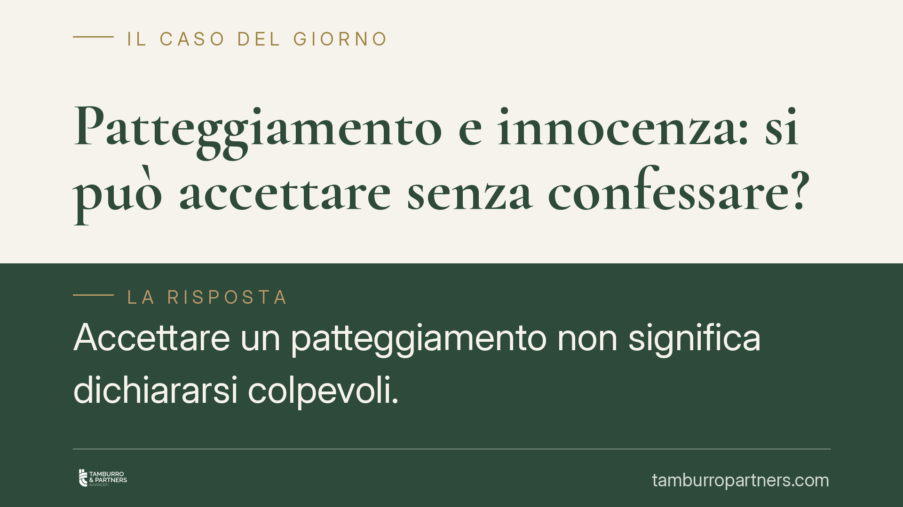

Patteggiamento e innocenza: si può accettare senza confessare?
Accettare un patteggiamento non significa dichiararsi colpevoli. Chi si ritiene innocente può comunque valutare questa strada per definire in fretta il procedimento e ottenere una riduzione della pena. Ma è una scelta con conseguenze precise, che vanno comprese prima di firmare qualsiasi accordo con la Procura.

Il caso: patteggiamento e presunzione di innocenza
Una delle domande ricorrenti di chi affronta un procedimento penale è netta: posso patteggiare pur ritenendomi innocente? La risposta è affermativa, ma richiede una premessa. Il patteggiamento — tecnicamente "applicazione della pena su richiesta delle parti" — non è una confessione. È un accordo processuale sulla pena, non una dichiarazione di colpevolezza.
L'imputato che sceglie questa via rinuncia a difendersi nel merito attraverso il dibattimento e concorda con il pubblico ministero una sanzione ridotta. Non ammette il fatto: definisce solo la conseguenza sanzionatoria, in cambio di tempi rapidi e di uno sconto di pena fino a un terzo.
Inquadramento normativo
Lo strumento è disciplinato dall'art. 444 del codice di procedura penale. Il comma 2 è centrale: prevede che il giudice, prima di ratificare l'accordo, verifichi la corretta qualificazione giuridica del fatto, l'applicazione e la comparazione delle circostanze, la congruità della pena proposta. Se ritiene che debba essere pronunciata sentenza di proscioglimento — perché il fatto non sussiste, l'imputato non lo ha commesso o il reato è estinto — il giudice non ratifica l'accordo e assolve.
Questo è il punto che spesso sfugge: il patteggiamento non elimina il controllo del giudice. Se dagli atti emerge in modo evidente l'innocenza, l'accordo non passa. Il controllo, però, è limitato agli atti disponibili e non equivale all'istruttoria approfondita del dibattimento.
La Corte di Cassazione ha più volte ribadito la natura della sentenza di patteggiamento: è equiparata a una condanna quanto agli effetti penali, ma non presuppone un accertamento pieno della responsabilità paragonabile a quello del giudizio ordinario.
Cosa cambia in concreto
La conseguenza più rilevante riguarda gli altri giudizi. La sentenza di patteggiamento non fa stato nei giudizi civili, amministrativi e disciplinari. In pratica, chi ha patteggiato non si vede automaticamente riconosciuta una colpa in un successivo processo civile per il risarcimento del danno: la controparte dovrà comunque provare i fatti.
Questo rende il patteggiamento un'opzione meno gravosa di una condanna ordinaria in termini di ricadute esterne al processo penale. Restano invece gli effetti penali diretti: iscrizione nel casellario giudiziale (con eccezioni per le pene più lievi e possibilità di estinzione del reato in caso di condotta positiva nei termini di legge), e rilevanza in caso di recidiva.
Attenzione però: la scelta è definitiva. Salvo casi limitati, la sentenza di patteggiamento non è appellabile nel merito. Chi rinuncia al dibattimento rinuncia alla possibilità di dimostrare la propria innocenza davanti a un collegio, con tutte le garanzie dell'istruttoria.
La valutazione, quindi, è di convenienza processuale e non solo di verità sostanziale. Un imputato innocente ma privo di prove solide, esposto a un processo lungo e dall'esito incerto, potrebbe razionalmente preferire una pena contenuta e certa. Un imputato con una difesa robusta ha interesse opposto.
Cosa fare in concreto
- Valuta le prove a carico prima di decidere. Non ragionare sulla sola convinzione di innocenza, ma sulla concreta capacità di dimostrarla in dibattimento.
- Quantifica i rischi. Confronta la pena patteggiabile con la sanzione massima applicabile in caso di condanna ordinaria e con la probabilità di assoluzione.
- Verifica gli effetti collaterali. Chiedi al tuo difensore l'impatto su casellario, eventuali procedimenti disciplinari, permessi, incarichi pubblici.
- Non firmare sotto pressione temporale. L'accordo va costruito con calma insieme al legale; la fretta è un pessimo consigliere.
- Considera le alternative. Messa alla prova, riti abbreviati o proscioglimento anticipato possono essere più adatti al caso concreto.
Il patteggiamento è uno strumento tecnico, non una scorciatoia né una resa. La sua utilità dipende interamente dalle circostanze del singolo procedimento. Consigliamo di affrontare la scelta con un'analisi puntuale del fascicolo e non su valutazioni astratte.
---
*Contributo informativo a cura di Tamburro & Partners - Avv. Giuseppe Tamburro. Non costituisce parere legale.*
Ogni condominio ha una storia a sé.
Se gestisci un'amministrazione e vuoi un confronto su una specifica questione condominiale, scrivi allo studio. Ti rispondiamo entro un giorno lavorativo.